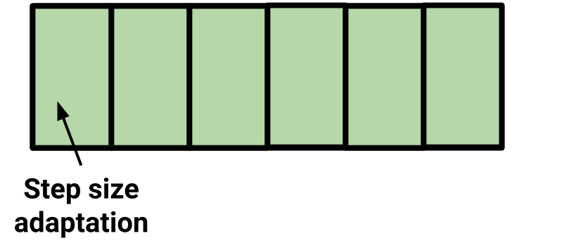
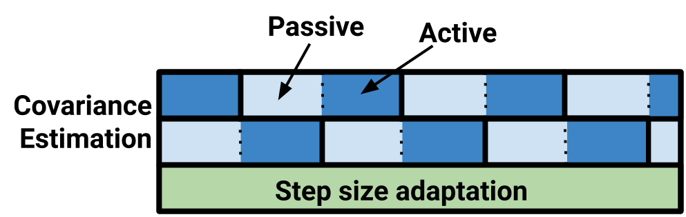

Introduction
This essay is based on a talk given on June 19, 2019 at the "Probabilistic & Differentiable Programming Summit". Original slides are available here. All the code for producing the animations is available on github, mostly leaning on a bespoke library for researching MCMC written with Jax and autograd.
I am an open source contributor on a number of libraries, notably PyMC3, which is a library for probabilistic programming in Python. One of the benefits of PyMC3 is the friendly, simple API that abstracts away the details of the inference, allowing domain experts to fit models without needing to be experts at inference:
import pymc3 as pm
with my_model: # defined earlier
trace = pm.sample() # ✨✨magic✨✨
This essay has two goals:
Many thanks to the PyMC3
contributors for building the library, and the conference organizers for inviting me. Thanks
also to Robert P. Goldman for thoughtful proofreading, and to my colleagues at  , particularly Max Livingston, Paul
Kernfeld, and Sam Zimmerman,
for patient comments and suggestions.
, particularly Max Livingston, Paul
Kernfeld, and Sam Zimmerman,
for patient comments and suggestions.
- Provide some intuition into the geometry of some of the algorithms and diagnostics that we use in probabilistic programming to give some appreciation to what happens in the ✨✨magic✨✨ step, and
- Do a code tour to describe how PyMC3 tunes sampler parameters.
This talk is partly in reaction to a question I was recently asked:
 Good general advice is to just check
the Stan manual
for details, but I will do some compare and contrasting on PyMC3's approach.
Good general advice is to just check
the Stan manual
for details, but I will do some compare and contrasting on PyMC3's approach.
"What does PyMC3 do that I cannot find in the Stan manual?"
While I love PyMC3's ease of use, extensibility, and community, we have a well-earned reputation for borrowing good ideas from other projects, particularly the wonderful Stan library.
"There's an old saying... 'Python is the second-best language for everything'" - @callahad #PyCon2018
— Jake VanderPlas (@jakevdp) May 11, 2018
What is tuning?
"Tuning" broadly describes what happens before sampling. In Bayesian inference, our goal is to calculate expectations over probability distributions. Recall that an expectation with respect to a distribution \(\pi\) is $$ \mathbb{E}[f] = \int f~d\pi. $$ MCMC works by observing that if you have samples from your distribution, \(x_j \sim \pi\), then $$ \mathbb{E}[f] \approx \frac{1}{n}\sum_n f(x_j). $$ MCMC achieves that by producing samples that are asymptotically guaranteed to come from the distribution of interest: the "stationary distribution".
When we tune, we throw away these asymptotic guarantees, searching for parameters for our sampler that
will speed up the calculation of these expectations. In the particular case of PyMC3, we default to
having 500 tuning samples, after which we fix all the parameters so that the asymptotic
guarantees are again in place, and draw 1,000 new samples. By default, the first 500 tuning samples are
discarded, as it would be theoretically shaky ground to suggest they came from the stationary
distribution at all.

Tuning in Metropolis-Hastings
To warm up, consider a Metropolis-Hastings sampler. Recall that Metropolis-Hastings works by making a proposal, and accepting or rejecting based on the ratio of the density of the stationary distribution at the proposed point and at the current point: Always accept if the proposal has higher probability, and sometimes reject if the proposal has lower probability: If we are being careful (which, we're not), Hastings extended the algorithm to non-symmetric proposal distributions, so this is just a Metropolis acceptance, but all of our proposals will be symmetric anyways $$A(x_t) = \min\left\{1, \frac{\pi(x_t)}{\pi(x_{t - 1})}\right\}$$
If we consider a proposal distribution that is a normal centered at the previous point with diagonal covariance, there is one parameter to tune, which is the step size. $$x_{t + 1} \sim \mathcal{N}(x_t, sI)$$
What are our tradeoffs when choosing step size? Here is a very small step size, being used to sample from an isotropic Gaussian. Notice that nearly every proposal is being accepted, because the steps are small enough that the underlying stationary distribution does not change very much. On the right-hand side is an empirical estimate of the mean and 1 standard deviation ellipse, compared with the true mean and standard deviation.
Going in the other direction, these are very large steps for the proposal - 10,000 times as large as the previous figure - and notice that most proposals are rejected. You can see the empirical mean and standard deviation keep updating as the current position is resampled. There is some evidence that says an acceptance probability of 23.4% is optimal in terms of these expectations converging Roberts, Gelman, and Gilks. "Weak convergence and optimal scaling of random walk Metropolis algorithms.". In practice, PyMC3 tries to get the acceptance probability between 20% and 50% through tuning.
Here we have a tuned diagonal proposal distribution. There is a mix of acceptances and rejections, and it looks like the mean and covariance are converging to the true values more quickly. Remember: all three of these examples have theoretical convergence guarantees, but we are interested in fast convergence of these expectations.
In any rate, this tuning is implemented in a windowed fashion in PyMC3, which will also be the strategy for tuning in our gradient-based samplers. 
During each of these windows, we make an estimate of a quantity - here the acceptance rate - and then update parameters based on that estimate. This is actual source code, and by default, every 100 samples, this switch statement runs.
def tune(scale, acc_rate):
"""Tunes the scaling parameter for the proposal
distribution according to the acceptance rate over the
last tune_interval:
Rate Variance adaptation
---- -------------------
<0.001 x 0.1
<0.05 x 0.5
<0.2 x 0.9
>0.5 x 1.1
>0.75 x 2
>0.95 x 10
"""
if acc_rate < 0.001:
# reduce by 90 percent
scale *=0.1
elif acc_rate < 0.05:
# reduce by 50 percent
...
elif acc_rate > 0.95:
# increase by one thousand percent
scale *= 10
return scale
Aside: Effective Sample Size
It is worth noting here that the animations above are asking you to judge convergence heuristically. In reality, effective sample size is the diagnostic that we are trying to intuit. The number comes from the observation that for independent, identically distributed random variables, the variance of the empirical mean, \(\hat{\mu}\), is the true variance divided by the number of samples: $$\hat{\mu} = \frac{1}{n}\sum_{j=1}^n x_j$$ $$\operatorname{Var}(\hat{\mu}) = \frac{\sigma^2}{n},$$ where \(\sigma\) is the true standard deviation of the underlying distribution.
Then the effective sample size is defined as the denominator that makes this relationship still be true: $$\operatorname{Var}(\hat{\mu}) = \frac{\sigma^2}{n_{\text{eff}}}.$$
This quantity is difficult to compute: you might use multiple chains to estimate \(\operatorname{Var}(\hat{\mu})\), and estimating \(\sigma^2\). There is a great recent paper Vehtari, Aki, Andrew Gelman, Daniel Simpson, Bob Carpenter, and Paul-Christian Bürkner. "Rank-Normalization, Folding, and Localization: An Improved \(\widehat{R}\) for Assessing Convergence of MCMC." giving better up to date details.
We might visualize this relationship by running our previous experiment many times, to estimate the variance of the empirical mean over all our samples.
Tuning in Hamiltonian Monte Carlo
Next we talk about the real interesting bit here: adaptation in gradient-based samplers, specifically Hamiltonian Monte Carlo. As a warning, the story is importantly different for the No-U-Turn sampler Hoffman and Gelman. "The No-U-Turn Sampler: Adaptively Setting Path Lengths in Hamiltonian Monte Carlo.", mainly because of the dynamic tree building, compared to a fixed path length in HMC.
Recall that in Hamiltonian Monte Carlo, there is a system of differential equations we solve, integrating a position, \(\mathbf{q}\), and momentum, \(\mathbf{p}\), for some fixed amount of time I, for one, blame the physicists for \(\mathbf{p}\text{omentum}\) and \(\mathbf{q}\text{osition.}\). $$ \frac{d \mathbf{q}}{dt} = \mathbf{p}, ~~ \frac{d \mathbf{p}}{dt} = - \frac{\partial V}{\partial \mathbf{q}} $$ Details note: \(V\) is the negative log probability, \(-\log \pi(\mathbf{q})\), and is the potential energy in this system. This term is also the reason this is a gradient-based method, and calculating it for arbitrary distributions is why most modern probabilistic programming languages use an autodiff implementation.
This is a 2D mixture of 3 Gaussians, and I am just simulating Hamiltonian dynamics here, not taking any samples. The Hamiltonian equations conserve energy, so in this physical simulation, a trajectory far away from the probability mass will move slowly: it has traded velocity for potential energy. Conversely, when trajectories pass near regions of high probability, they will move fast, but have very little potential energy.
To look deeper into tuning parameters, let's drop down a dimension, and consider this one dimensional
mixture of three Gaussians.

To perform HMC, we double the number of dimensions by adding a momentum parameterThis is why we dropped down to 1 dimension, because a 2-dimensional distribution would require 4 dimensions to visualize the position-momentum phase space.. We evolve the system for a fixed path length, and then the new position becomes our new sample, we discard the momentum, and resample a new one. A nice intuition to pick up here is that you can get between modes only when sampling an extreme momentum, which gives the trajectory high energy. So the marginal x-axis samples are from our stationary distribution, and the marginal y-axis samples are from the momentum distribution, which we pick. In this case, I chose a normal distribution. One parameter we will work on tuning is the covariance of this momentum distribution. There is research that suggests a covariance that matches the stationary distribution is optimal. Betancourt, Michael. "A Conceptual Introduction to Hamiltonian Monte Carlo."
We also care about step size. Each of these simulations are sampling 100 points from our stationary distribution, and is displayed with the same frame rate, so this is how the computer feels running your sampling. There is a tradeoff between large steps and integration error, and so you can not just take arbitrarily large steps. We actually have to do a Metropolis acceptance step at the end of each trajectory. By default, PyMC3 tries to get an acceptance rate of 65% for HMC, and 85% for NUTS.
Tuning HMC
Step size adaptation is fairly quick. These are stochastic optimization problems. You can use a variant of what we used for Metropolis-Hastings earlier, but PyMC3 uses the dual averaging algorithm from the NUTS paper:
def dual_averaging_adapt(self, p_accept):
self.error_sum += self.target_accept - p_accept
log_step = (self.mu -
t ** -0.5 * self.error_sum / self.gamma)
eta = self.t ** -self.kappa
self.log_averaged_step *= (1 - eta)
self.log_averaged_step += eta * log_step
self.t += 1
return np.exp(log_step), np.exp(self.log_averaged_step)
It is a pretty dense algorithm, and the goal of putting it here is just to show that we can write it
down in a few lines. The parts to call out are that there is a log_step that does some
noisy exploration, and a stateful log_averaged_step that smooths out the exploratory steps.
While tuning, we use the exploring step size, and after tuning we switch to the averaged step size.
Here is what the exploring step size, smoothed step size, and simple algorithm look like on a toy problem. You can see convergence is somewhat faster for the dual averaging algorithm. I initialized the simple step size adaptation (which we used in the Metropolis tuning earlier) at a pretty unfair spot. I do not think it is as bad as that.
Covariance estimation is also done in an online fashion:
class _WeightedVariance:
def add_sample(self, x):
self.w_sum += 1
old_diff = x - self.mean
self.mean[:] += old_diff / self.w_sum
new_diff = x - self.mean
self.raw_var[:] += old_diff * new_diff
There is some math going on here you can check, but it runs during tuning, on two different estimator objects, every step:
class QuadPotentialDiagAdapt:
def update(self, sample):
self._foreground_var.add_sample(sample)
self._background_var.add_sample(sample)
self._update_from_weightvar(self._foreground_var)
n_samples = self._n_samples
if n_samples > 0 and n_samples % self.window == 0:
self._foreground_var = self._background_var
self._background_var = _WeightedVariance()
self._n_samples += 1
The foreground and background covariance estimators swap out every window steps, which is
100 by default.
So what does this look like? 
PyMC3 has two covariance matrices updating constantly, and the exploratory step size is running the
whole time as well. Compare this to this sketch of the Stan warmup routine:

The fast tuning of step size is done first, then expanding windows to estimate the covariance matrix, before a final step size adaptation.
Takeaways
- Automate what you can: a simple API that sets sensible defaults has worked well for us.
- Consider effective sample size: samples per second is not a good benchmark to optimize This advice might seem like it is throwing shade at PyMC3's ubiquitous progress bar - which reports samples per second - but reporting progress is different from a benchmark. See, e.g., Don Norman's "The Design of Everyday Things", which suggests providing "full and continuous information about the results of actions and the current state of the product or service." .
- Windowed adaptation: it provides a few orders of magnitude of improvement to effective samples per second.